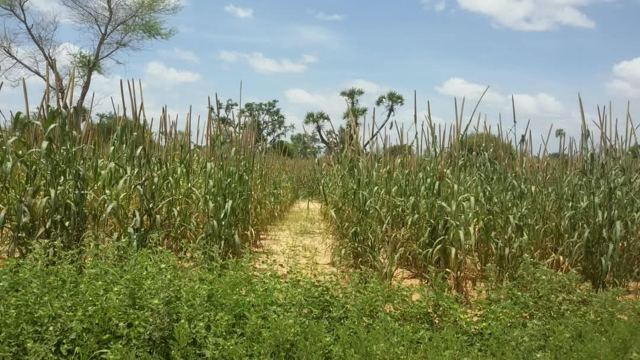
01
Agriculture et Développement Rural
Formations pratiques au champ, diffusion de techniques et de semences améliorées, appui aux organisations de producteurs.
Région de Zinder · Niger
L’ONG Marhaba accompagne les producteurs, les éleveurs, les femmes et les jeunes du Niger pour sécuriser leurs terres, anticiper les crises et bâtir des moyens d’existence durables.
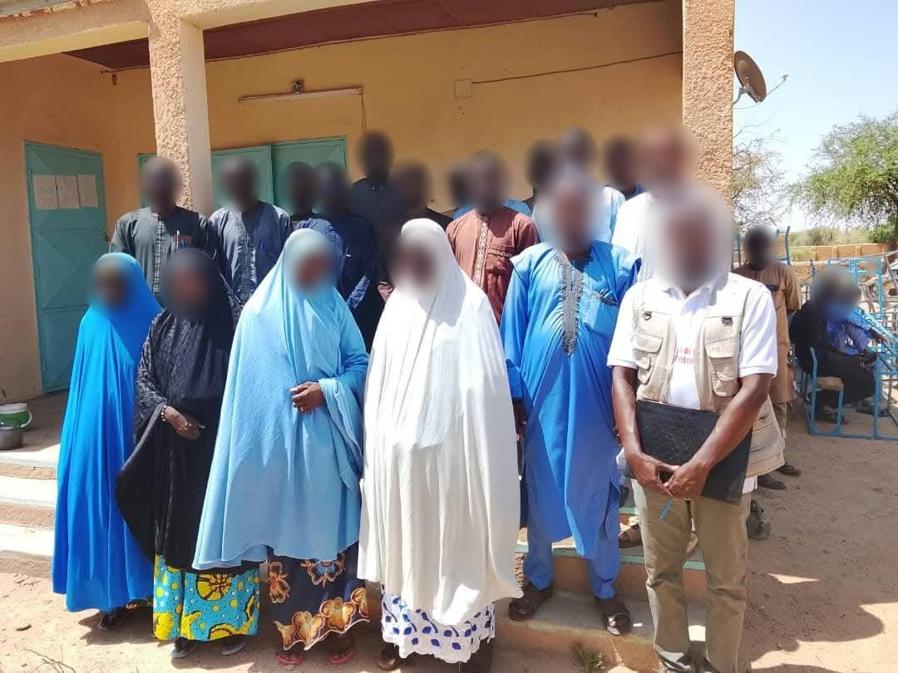
Qui sommes-nous
L’ONG Marhaba est une organisation nigérienne de développement communautaire. Elle intervient aux côtés des populations rurales, des collectivités et des services techniques pour renforcer la sécurité alimentaire, la gestion durable des ressources naturelles et la cohésion sociale.
Notre approche est participative : nous impliquons les autorités locales, les services techniques et les communautés bénéficiaires à chaque étape, de l’identification des besoins jusqu’au suivi des résultats.
Renforcer les capacités des communautés rurales pour qu’elles deviennent actrices de leur propre développement.
Des terroirs sécurisés, productifs et apaisés, où chaque femme et chaque jeune trouve sa place.
Nos domaines d’intervention
Des actions complémentaires qui répondent aux réalités des zones rurales et agropastorales du Niger.

Formations pratiques au champ, diffusion de techniques et de semences améliorées, appui aux organisations de producteurs.
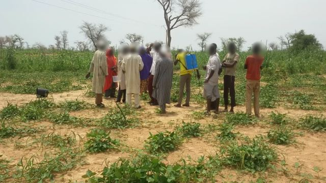
Santé animale, sécurisation des couloirs de passage et des aires de pâturage, prévention des conflits entre agriculteurs et éleveurs.
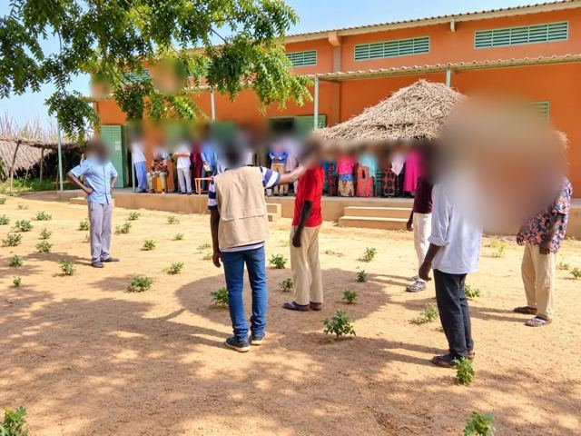
Commissions foncières, actes fonciers, récupération des terres et gestion concertée des ressources naturelles partagées.
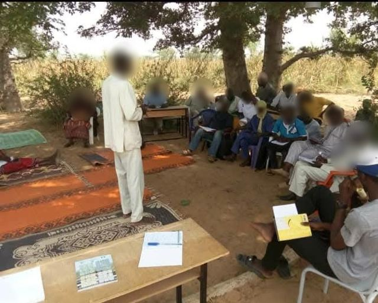
Appui aux communes et aux structures locales, mobilisation de la diaspora et des initiatives locales pour des territoires attractifs.
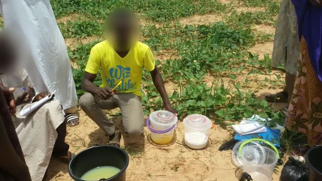
Formation professionnelle, activités génératrices de revenus et accompagnement des jeunes et des femmes vers l’autonomie.
Projets phares
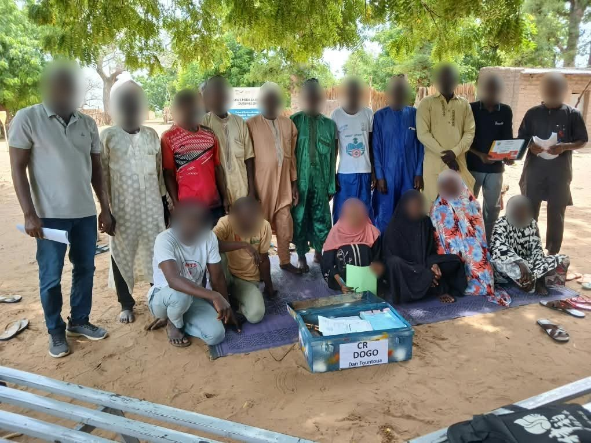
Gestion durable des terresAvant ce projet, les populations étaient peu informées des règles de gestion des terres, du respect des couloirs de passage des animaux et de l’importance des actes fonciers. L’ONG Marhaba a mis en place et équipé des commissions foncières de proximité et formé leurs membres.
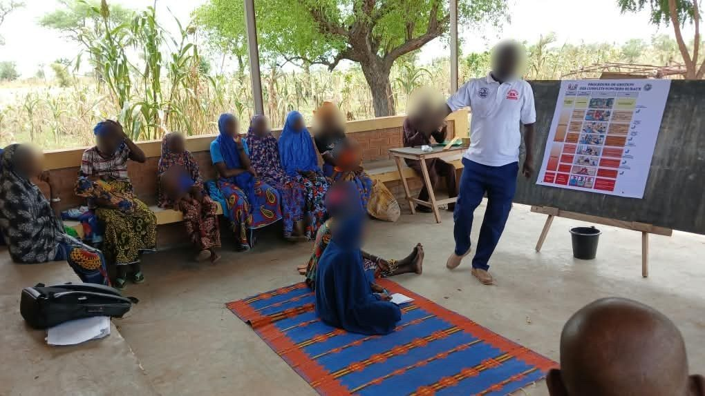
Résilience et alerte précoceFormation, équipement et accompagnement des Structures Communautaires d’Alerte Précoce et de Réponse aux Urgences et des Observatoires de Suivi de la Vulnérabilité, pour mieux collecter, analyser et transmettre l’information sur les risques : sécurité alimentaire, santé humaine et animale, nutrition, ressources naturelles et cohésion sociale.
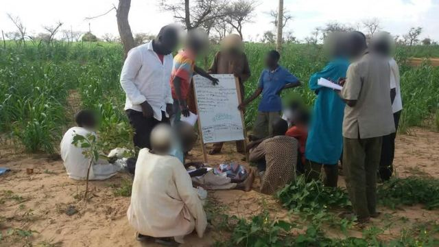
Démonstrations en plein champ avec les producteurs et productrices pour adopter de meilleures pratiques culturales.
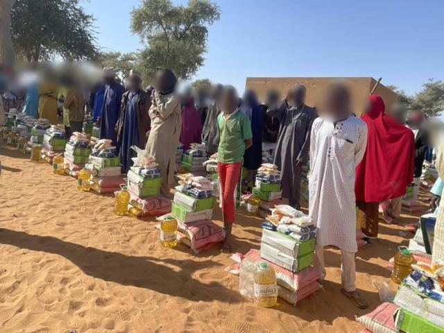
Distributions de vivres (céréales, huile, denrées de base) aux ménages ciblés de façon participative.
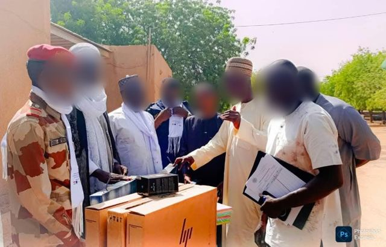
Remise d’ordinateurs, de smartphones et de kits aux comités, dont le comité sous-régional de Matamey.
Notre approche
Les leçons tirées de nos projets guident chacune de nos interventions.
Des structures implantées au village, au plus près des populations et de leurs préoccupations.
Des compétences acquises sur le terrain : actes fonciers, collecte de données, techniques agricoles.
Après la prière du vendredi, lors des cérémonies, aux points d’eau et aux aires de pâturage.
Un travail étroit avec les autorités communales, les services techniques et les partenaires.
Galerie
Ils nous font confiance
Nous agissons avec des partenaires techniques et financiers engagés pour le développement rural du Niger.
Actualités
Partenaires, bénévoles et experts : votre engagement permet de former, d’équiper et d’accompagner durablement les villages.
Bailleurs, programmes, collectivités : co-construisons vos interventions.
Nous contacterContact
Une question, un projet, une proposition de partenariat ? Notre équipe vous répond.
Sur iPhone ou iPad, ouvrez ce site dans Safari, touchez le bouton Partager puis « Sur l’écran d’accueil ».